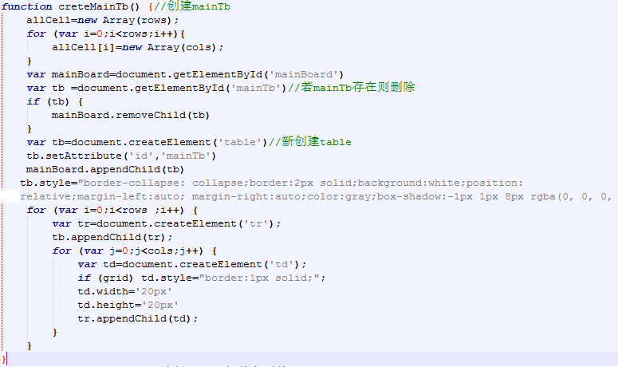
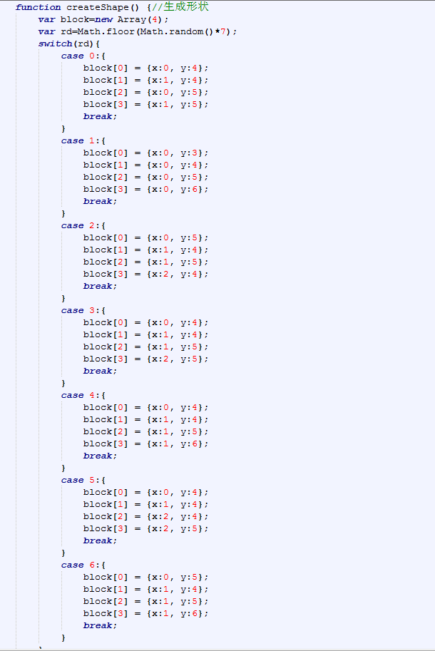
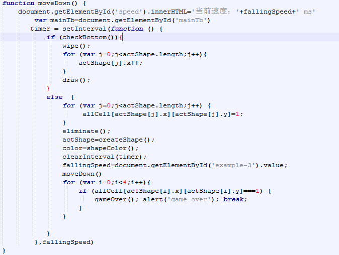
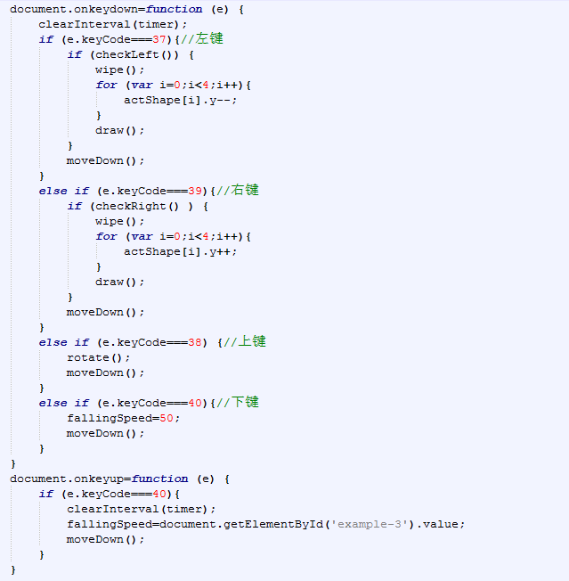
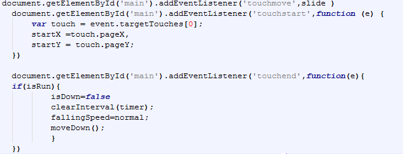
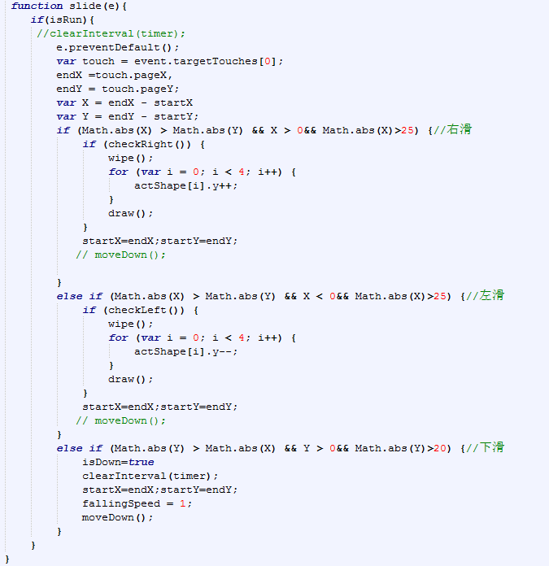
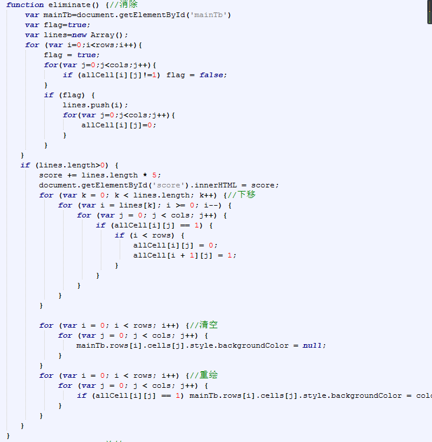

俄罗斯方块是一款经典小游戏，游戏规则简单，但又不失趣味。本程序的主要任务就是使用html，css和原生JavaScript编写简单的俄罗斯方块游戏，要求设计比较美观和健全的游戏界面。点击开始，7种形状的方块随机产生，自由下落，落下时可由玩家上下左右控制移动，旋转和加速下降，以便以玩家所需要的形态和位置落下。如果落下时，方块的方格能填满某一行或多行，则这些行的方格可消去。消去一行,增加5分，若新产生的方块没有位置落下则游戏结束。本程序还有调整游戏界面大小，选择网格线的显示，调整下降的速度，暂停等功能。
游戏界面由table构成，则各种方块就是由相应坐标的单元格组成。通过计时器setInterval函数，周期调用方块的擦除与重绘函数，每个周期方块的每个方格的纵坐标加1，得到方块自动下移的效果。按下左键（右键），方块的横坐标减1（加1）就是左移（右移）。按下键，减小setInterval函数的第二个参数，得到方块加速下降的效果。按上键，计算出方块旋转后的坐标，擦除当前方块，绘制新的方块。
使用js生成table，并添加到html中，其中，行数和列数可以选择，默认为20，若设置td的border，则显示网格。
定义一个长度为4的数组，数组中的每一项存储一个方格的坐标，共有7种；每次调用该函数，随机在7中方块中选一个返回。
使用计时器setInterval得到方块下移的效果，下移前先判断下边距，若方块到达底部或方块下方占有其他方块，则方块停止下移，并将allCell数组的当前方块坐标标记为1，表示当前坐标的表格中已有方块。反之则擦除方块，方块的x值加1，然后重新绘制方块，方块继续下降，直到方块到达底部。
定义键盘监听事件.
给游戏界面mian添加touchstart，touchmove，touchend事件，通过touchstart和touchmove事件组合得到左滑，右滑，下滑事件。其中，touchstart：手指放到屏幕上时触发 Touchmove：手指在屏幕上滑动式触发 touchend：手指离开屏幕时触发。当开始一个touchstart事件的时候，获取此刻手指的横坐标startX和纵坐标startY；当触发touchmove事件时，在获取此时手指的横坐标moveEndX和纵坐标moveEndY;最后，通过这两次获取的坐标差值来判断手指在手机屏幕上的滑动方向。
 解决方法：先从上到下遍历每一行的每一列，若某一行填满方块，则将行数保存到lines数组；若lines数组长度大于0，则从遍历lines数组，即从上到下消除满的行，每消除一行就将该行的上一部分整体下移一行，直到遍历完lines数组。代码如下：
解决方法：一个方块下降到底部后，判断是否触发了下滑事件，若是，则停止产生新方块，直到触发touchend事件，即结束下滑事件后再产生新的方块；反之则正常产生新方块，正常下降。
俄罗斯方块是经典游戏，也是每一个程序员必须编写的程序之一。但是编程就像写文章，不同的人有不同的思想，实现的算法也就不尽相同，通过编写这个小游戏，首先要学会独立思考，将实际问题抽象成程序。